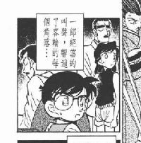
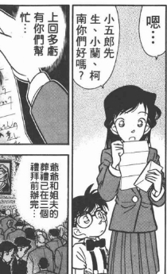
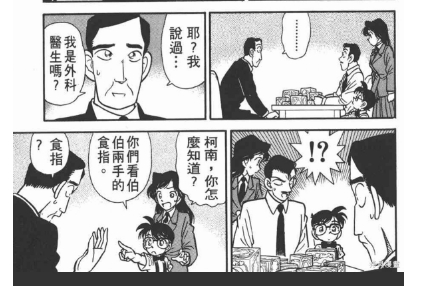
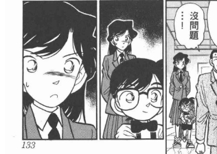
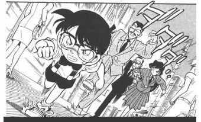
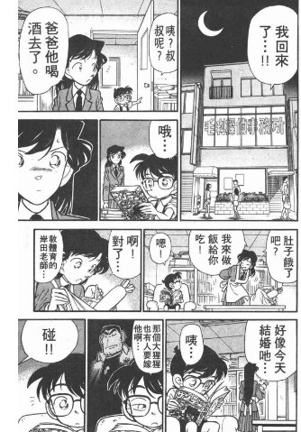

由于看到一些对于小兰角的分析，让我有点好奇，所以我去漫画中看了一下小兰的发型的变化，在这里我略微展示一下我的发现和我的看法（只统计前三卷）
首先是第一卷，我截取了三张图，小兰的出场，小兰生气，以及最后小兰的发型。可以看出青山在这一卷的对于小兰的发型的初始设定应该就是这样的，在整个第一卷中小兰的发型基本都是以这个形式出现的。不过在生气时小兰的发型首次出现了类似“角”的形状，不过在我看来这里应该只是夸张的表现，因为新一也出现了“角”。
从第二卷开始小兰的发型似乎就开始变得有些模糊了，在有“角”与无“角”之间一直在变换。难道这里是因为青山无意造成的吗？在我看来可能是青山想让读者产生一种小兰的发型本来就是这样的模糊的概念，因为很明显在第一卷中小兰的发型其实基本一直都是同一个造型，而不是像第二卷这样一直在变化的。这里其实还有一个小细节，就是在我的第二张截图中柯南面前的屏幕中出现了铁剑，也就是青山另一部漫画九龙珠的主角，是否也对小兰的发型有所隐约？（这张截图来自，第二卷第三节）对于九龙珠的一些设定我将在此贴最后做出解释和补充。
第三卷的截图我还在整理，稍微晚一点再发
打乱队形抱歉。说一句不中听的，没有角的兰，真的没特色啊。但大概角才是兰给人最深刻的印象吧
2024-05-30 05:17 | ✨恩奇都🌸:可能是为了和青子做出一些区分？
兰姐没有角的发型和小哀的刘海发型有点像，不知道是不是为了做区分
2024-05-30 05:18 | ✨恩奇都🌸:没有角其实差距也挺大的
这里我先贴的是第三卷的一到五节中的部分截图，一开始青山画了很精细的小兰的发型（有一说一这里小兰还是很可爱的）在这些章节中虽然“角”和无“角”还是时有时无，但是有这个“角”的情况其实变得更多了，难道是因为方便画吗？这里的最后的一张截图也是到了第五节的结尾，不过我分不清到底是不是“角”，我这里归到没有“角”了，这里也是小兰无“角”发型的最后的一张。

）在这些章节中虽然“角”和无“角”还是时有时无，但是有这个“角”的情况其实变得更多了，难道是因为方便画吗？这里的最后的一张截图也是到了第五节的结尾，不过我分不清到底是不是“角”，我这里归到没有“角”了，这里也是小兰无“角”发型的最后的一张。
从第六节“无法实现的梦”开始小兰的发型就彻底定型了，这个“角”从现在开始就是常驻了。不过话说回来这章的标题是否也有一些特别的暗示呢？不过这章由于小兰的出现就只有这两格，所以我也不知道是因为作画问题还是刻意的。不过从现在开始，我会把后续章节所有小兰出现的场景全部截图。


从第七节开始，小兰的“角”就已经正式常驻了，我会在后面把所有的小兰出现的截图都发出来。有意思的是这个发型常驻的点也就是第七章，是小兰开始怀疑柯南就是新一的章节，也就是说是她情绪起伏比较强烈的章节，至于这里说到情绪起伏的作用我会在最后写九龙珠的一些设定的时候做出回答。


这里第八章插画也画了小兰的“角”，所以在第三卷开头处就细画了一次小兰的发型，在章节插画这里却没有细化，这是否意味着青山在刻意的提示这个“角”的重要性呢
这里小兰对于柯南的怀疑越来越大，已经快要认定柯南就是新一了，所以他进行了试探

有意思的是，在这一段中城市风云儿即九龙珠又一次出现了，很难不怀疑青山是在给出一些提示，并且在小兰情绪最为激动的时候头上的角变得非常的尖锐明显（第七张图）
这里可以看出小兰已经认定柯南就是新一


最后因为阿笠博士的帮忙暂时打消了小兰的疑问，但是很显然小兰对柯南的怀疑还是存在的。到这里为止就是第三卷第五节后所有小兰出现的地方，可以看到从第五节开始小兰的“角”就已经完全常驻了。
关于九龙珠的一些设定和我的一些分析稍微晚点再发捏
宝子可以去宝子可以看下b站小栗粒粒出奇迹的毛利兰和服部为什么长角～
2024-05-30 07:26 | 丨七七大王丨:图片都是阿栗博士视频里的2024-05-30 07:27 | 丨七七大王丨:和你的想法不谋而合！人均柯学家！2024-05-30 07:29 | ✨恩奇都🌸:哈哈，我等等也会说一些九龙珠的设定
在九龙珠中，鬼丸猛因为被铁剑打败心生怨恨，在家族密室里拿到了风神之剑，但是却被风神打败化为了鬼，然后长出了角。可以看出鬼和角之间是有一定的关系的，但是由于我没有看完九龙珠，所以我这里姑且认为角就是成为鬼的表现，如果我的理解有误希望大家可以提醒我 。后面经武藏之口得出每个人心中都有鬼，因为憎恨，愤怒，野心等等因素，都会变成鬼。
。后面经武藏之口得出每个人心中都有鬼，因为憎恨，愤怒，野心等等因素，都会变成鬼。

。后面经武藏之口得出每个人心中都有鬼，因为憎恨，愤怒，野心等等因素，都会变成鬼。
根据我之前的评论，铁剑也就是九龙珠的第一次出现是在第二卷的第三节，而在此卷，小兰的“角”开始时不时的出现与消失，对应九龙珠的设定，我在这里归结为青山在这里可能是有想把小兰变成“鬼”的，在这里时不时的出现可能是在这里青山还没有想好到底要不要真的把小兰变成“鬼”，也可能是为了给读者一个模糊的概念，让读者对于小兰的发型产生一种“我一开始就是这样画的”的一种错觉，当然也可能他就是没有注意画，所以才会有“角”的出现。铁剑的第二次出现是在第三卷中，比起第二卷中只出现了画面，这里可以说是明确的写出来了，直接告诉你这就是“城市风云儿（即九龙珠）”，而且还通过柯南之口提出了铁剑和鬼丸猛，是否是青山在提示读者鬼丸猛因为对铁剑的愤怒变成了鬼，而小兰会因为新一的隐瞒而变成鬼呢？也就是在这之后马上就出现了小兰因为对柯南说过喜欢新一而害羞大叫的画面，可以看到这里是小兰情绪最强的时候，发型也变得像两个尖锐的“角”，而在九龙珠中，人会因为一些情绪而变成“鬼”，并且人变成鬼的表现就是长出“角”，那么小兰因为对新一的各种情绪而变成了“鬼”，是不是也是有可能的呢？不过这里就是仁者见仁智者见智了，这就是我对小兰发型的一些见解，以及小兰是“鬼”的一些分析。不过因为我对九龙珠的设定也不是那么了解，所以有说的不对的地方希望大家可以和我说说，而且这种分析本来就是比较有个人看法的，所以你要说是青山就是觉得这样画更简单更方便我也是没有意见的，希望大家可以多多讨论捏。
2024-05-31 13:00 | 幻想乡的仰慕者:回复 ✨恩奇都🌸 :不仅发型上，而且牙齿也有点像鬼一样可怕
大家是怎么看的呢
由于我还在从头开始看，所以如果后续有相关的信息，我也会在之后补充分析。
这里是第一次出现恶魔字样以及雕塑（出自第二卷第八节《恐怖的鬼屋》），不过这里当步美看到恶魔雕塑时，由于惊吓，她的发型呈现出了与“角”相似的形状。因此，在第三卷中，小兰的发型设计也不能排除是73喜欢通过这样夸张的发型的刻画来表示人物激烈情绪。


在这里说一个题外话，我想说一下撒旦的一些设定，图一节选自《圣经·启示录》的第12章，描写了撒旦与大天使米迦勒的斗争，可以看到撒旦的形象是有古蛇以及红龙的。以及对于战斗的描写，米迦勒同他的'使者'和龙与他的'使者'进行斗争，可以看到都用的是'使者'一词，虽然《圣经》中没有明确的写出撒旦是堕落的天使，但是从这里似乎也可以看出撒旦原本就是从天上来的。图二节选自《圣经·创世纪》中的第三章，描写的是亚当与夏娃被蛇蛊惑吃下禁果的故事，这里的蛇在现在的文学解释中也基本被视为撒旦的化身，因为在启示录中也写到了古蛇也是撒旦的化身。从这两个段落中可以看出撒旦的形象经常与诱惑（诱惑夏娃亚当偷食禁果）、背叛（与米迦勒的斗争）和惩罚（耶和华对亚当夏娃以及蛇的惩罚）等主题相联系。
这里的雕塑是一个嘴里叼着女人的恶魔的形象，这种形象往往象征着欲望的诱惑，可能是对权力、财富、美色等的追求，而恶魔则代表着这些欲望的黑暗面，引诱人们走向堕落。
有意思的是我在翻找撒旦教的纹章时看到了一些概念，曼德斯的山羊（安息日的山羊）与巴弗滅的紋章，配图取自符号吧，左边似乎是巴弗滅的紋章，右边则是曼德斯的山羊（安息日的山羊）。曼德斯的山羊是在1850年代出現的，常常會和法國的神秘學家伊利法斯．利未（Eliphas Levi）描繪的聖殿騎士團的紋章（巴弗滅的紋章）搞混在一起，利未所描绘的符号並非罪惡的標誌，而是調和、救贖、和神的聯邦，而曼德斯的山羊则是撒旦教的代表纹章，这是否也与撒旦是堕落的天使有一定的关系呢？这里只是一个小小的猜测，并不会影响到后续的分析，就当作是一个小小的科普吧。
话说回来，好像有点偏题了，本来只是想分析一下角出现的原因，现在怎么往撒旦那里偏了。但是我还是准备继续更新，发表一些我的看法。
上面我提到撒旦往往伴随着诱惑、背叛和惩罚，那么毛利兰有没有能对应上的点呢？在我看来其实是有的，不仅在钥匙孔中只有她是以这个形象出现的，还是她和别的男角色的互动中都能看出有一种诱惑的感觉，并且新一（柯南）也有多次对于毛利兰身材的评价，在我看来新一好像对于毛利兰的身体的在意程度比起心情要更大一点。是否就预示着新一的离开（背叛）就是对于毛利兰的惩罚呢？这里仅展示部分图片（太多地方有了，懒得整理了 ）。
）。
）。
隔着写论文呢
2024-05-31 03:13 | ✨恩奇都🌸:还真是
这个角就是偷懒，即使赋予撒旦的意义，也不是在前几卷里就设想好的，这个发型就是一个90年代中期流行的折头发的发型，即长头发女生把一大束头发折上去，侧面看就像角，前几卷里兰有明显的刘海，也是因为一小半头发折过去之后，剩下的头发横着拉过去会好看，那时候我拿我对象头发试过，留刘海是好看
2024-05-31 13:36 | FCBKLOSE18:在明显出现尖角之后，刘海也被偷懒地画在了底下，只要找个假发试一下，就会知道这是不可能的，刘海肯定是在另一侧，不然角是怎么折上去的？谁的发量也没有这么多啊，出现尖角后，谈撒旦论算是有点讨论空间2024-05-31 23:53 | ✨恩奇都🌸:回复 FCBKLOSE18 :确实偷懒的可能性挺大的，但是后面这角越来越尖，越画越大是真的难绷
话说回来m26里这个场景也太生草了吧，乍一看我都没看出来这是个什么动作
青山接受采访的时候说过曾经以为三个月就能完成柯南的。所以我觉得小兰初始设定是短篇女主角，暴力不懂侦探，然后随着跟柯南的相处慢慢理解了新一对侦探的热爱。
但是随着柯南需要扩篇，小兰的戏剧任务发生了变化，小兰需要在日常篇制造紧张和冲突，所以成长路线也从跟新一一起成长变成了需要揭穿柯南就是新一。
变成日常篇的boss后，角的形象开始常驻。
但是随着柯南需要扩篇，小兰的戏剧任务发生了变化，小兰需要在日常篇制造紧张和冲突，所以成长路线也从跟新一一起成长变成了需要揭穿柯南就是新一。
变成日常篇的boss后，角的形象开始常驻。
2024-06-02 00:28 | ✨恩奇都🌸:怎么说呢，其实前几卷小兰的刻画其实还不错吧，如果说柯南是侦探（文），那么小兰其实是可以作为武力担当来协助的，但是自从脚力增强鞋出现以后好像就把原来属于小兰的位置给抢了，如果真的要写新兰的话其实是没有必要出现这个道具的。2024-06-02 00:45 | 坠入蓝海🌊:回复 ✨恩奇都🌸 :跟我表达的意思是一样呀，超短篇设定是柯南文，小兰武。决定扩篇之后加强了柯南的武力值，小兰从女主变成日常篇boss，也从普通女高的形象变成了长角的恶魔。
不愧是神代思想犯，分析得好